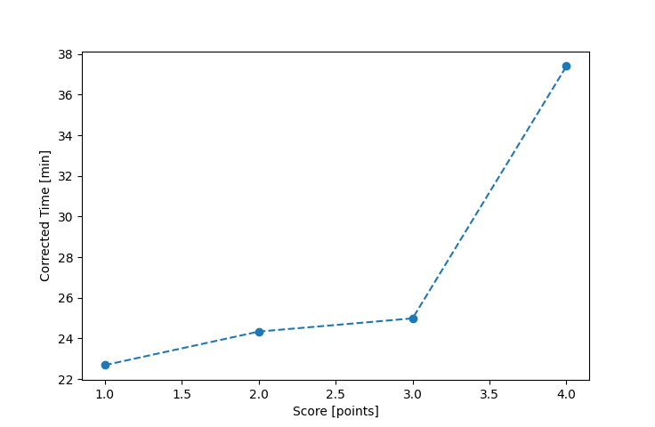

| Wind: | 2-3 (BFT) |
|---|---|
| RC: | Nick_HDavid_Bu |
| Date: | August 20, 2017 |
| Notes: | M2 90 thin triangle |
| Rank / Score | Name | Boat | Input Time [mm:ss] | Input Offset [mm:ss] | Race Time [mm:ss] | Race Time [s] | Handicap | Corrected Time [s] | Corrected Time [mm:ss] |
|---|---|---|---|---|---|---|---|---|---|
| 1.0 | Rod_H | PUF | 25:22 | 00:00 | 25:22 | 1522 | 1.11800 | 1361 | 22:41 |
| 2.0 | Ron_F | F5 | 23:30 | 00:00 | 23:30 | 1410 | 0.96600 | 1460 | 24:20 |
| 3.0 | Xavier | SWSX | 23:58 | 00:00 | 23:58 | 1438 | 0.95900 | 1499 | 24:59 |
| 4.0 | Gail_B | SWSX | 35:52 | 00:00 | 35:52 | 2152 | 0.95900 | 2244 | 37:24 |

Application Notes:
All race results are unofficial
View source code at https://github.com/cessnao3/portsmouthracecalc/